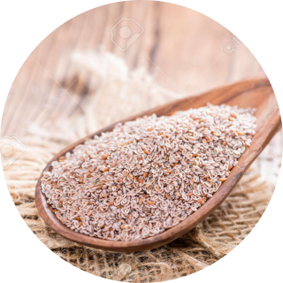

Лечебная диета № 4
Лечение заболеваний желудочно-кишечного тракта важно осуществлять комплексно. Ключевое значение при этом имеет диетическое питание, систему которого разработал профессор-гастроэнтеролог М. Певзнер в XX веке. Каждая из диет востребована и по сей день.
Например
Диета «Стол № 4» призвана помочь людям быстрее восстанавливаться при различных острых заболеваниях кишечника и расстройствах пищеварения. Эта система питания представлена несколькими вариантами, каждый из них при этом отвечает определенному состоянию человека.
Показания к диете № 4
- хронический колит, энтероколит на стадии обострения;
- острый гастроэнтероколит в начальной стадии развития болезни — диеты придерживаются после выдерживания голодного периода в течение нужного времени;
- дизентерия, язва, дисфагия.

Как правило, диета № 4 по Певзнеру назначается при заболеваниях, которые сопровождаются
частым и жидким стулом, острыми болями, повышенным газообразованием в кишечнике.
Например, у исследователей И. Цыбырнэ и В. Андреева встречаются такие рекомендации: «В
период выраженного обострения СРК с преобладанием поносов в стационаре назначают диету
№ 4» (И. Цыбырнэ, В. Андреев, 2011, с. 67−71).
Показанием могут быть развивающиеся на фоне заболеваний диспепсические явления:
расстройства дефекации, боли в животе, тошнота, болезненные спазмы. Лечебный рацион
поможет полностью обеспечить человека необходимыми веществами и уменьшить
воспалительные процессы, протекающие в слизистых оболочках пищеварительной системы.
Что входит в состав Фитомуцила?
В состав Фитомуцила входят 2 натуральных компонента: оболочка семян особого сорта подорожника Psyllium и мякоть плодов сливы домашней – богатые натуральные источники пищевых волокон (клетчатки). Фитомуцил не содержит сахаров, вкусовых добавок и красителей. Фитомуцил содержит в 4 раза больше растворимых волокон, чем обыкновенные отруби, он «чемпион» по содержанию растворимой клетчатки ** Еще одно преимущество Фитомуцила в том, что в его составе нет сенны, поэтому его очищающий эффект не сопровождается болями и внезапными позывами. Регулярная работа кишечника восстанавливается естественным образом. Отсутствие нежелательных эффектов и привыкания особенно важны в тех случаях, когда принимать слабительное приходится длительно.

Важно проконсультироваться с врачом по поводу стола № 4. Могут существовать определенные ограничения, и только специалист подскажет, как справиться с проблемой.
Один пакетик (5,0) содержит:
шелуха семян подорожника (Plantago Psyllium) 4,5 г; плоды сливы домашней (Prunus Domestica) 0,5 г.
Как работает Фитомуцил?
Растворимые волокна Фитомуцила в кишечнике впитывают воду, разбухают, превращаются в слизистый гель и размягчают стул, что способствует его легкому выведению. Нерастворимые пищевые волокна механически стимулируют стенки кишечника, активизируя его движения и выведение отходов. Таким образом, Фитомуцил одновременно воздействует и на содержимое кишечника, и на его слизистую оболочку, избавляя от запоров, вздутия и ощущения тяжести. Кроме слабительного эффекта, Фитомуцил создает благоприятные условия для роста собственной полезной кишечной микрофлоры, что способствует устранению дисбактериоза, который всегда имеет место при запорах.
Кому можно принимать Фитомуцил?
Фитомуцил разрешено использовать в период беременности, кормления грудью, в пожилом возрасте и у детей старше 3 лет. Фитомуцил можно использовать при сахарном диабете.
Особые указания:
Для повышения эффективности Фитомуцила и нормализации работы кишечника рекомендуется пить 1,5-2 литра жидкости в сутки.
Продолжительность приема:
Продолжительность приема Фитомуцила подбирается индивидуально. Если работа кишечника нарушилась в результате смены режима и рациона питания (путешествие), на фоне диеты или после приема антибиотиков, курса в 2-4 недели обычно бывает достаточно. При хроническом функциональном запоре в большинстве случаев причина кроется в недостаточном потреблении пищевых волокон и жидкости. Поскольку клетчатка является неотъемлемой частью здорового рациона питания, а Фитомуцил является источником высококачественной клетчатки, его можно принимать постоянно. После нормализации стула рекомендуется употреблять Фитомуцил в поддерживающей дозе (1 пакетик в сутки).
Что исключают из диеты:
- все жареное с корочкой;
- консервы;
- соусы, специи, маринады, острое;
- наваристые первые бульоны; первое с макаронами, цельнозерновыми крупами;
Что можно:
- супы из нежирных сортов мяса, рыбы;
- овощные бульоны и супы;
- рисовый, овсяный отвар;
- пшеничные сухари — не более 200 г в сутки;